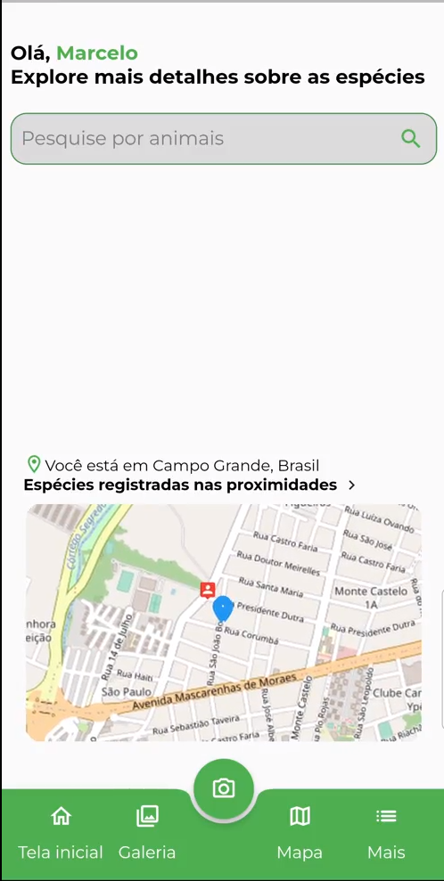
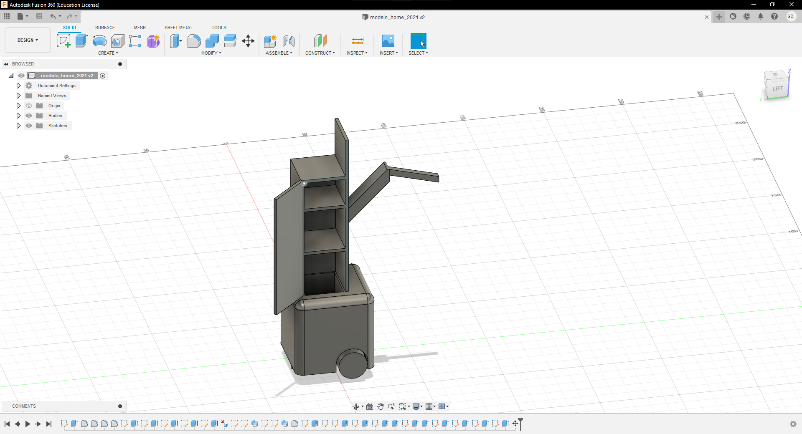
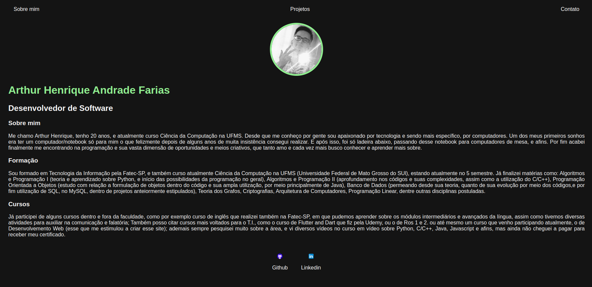

Projeto Fauna e Flora
Projeto desenvolvido pelo time do L.I.A., dentro da UFMS, e em colaboração com o MCTI.
Também denominado como E.I.T.A (Ecossistema inteligente transmitindo aprendizado), o projeto consiste em um aplicativo móvel para reconhecimento geral de espécimes da fauna e flora, com o foco inicial sendo na Mata Atlântica brasileira, mas com total possibilidade de expansão, podendo assim atingir todo o espectro nacional. A ideia da aplicação é tirar uma foto de uma espécie de animal ou planta, e enviar ao nosso banco de dados/modelo, retornando para o usuário seu nome, e demais características, devidamente o "reconhecendo", também possibilitando o registro da localidade de tais animais, facilitando o serviço de orgãos cuidadores, e demais amantes e estudiosos da área.

H.O.M.E (robô para limpeza doméstica)
Projeto desenvoldio pela equipe do AraraBots, em colaboração com o L.I.A., além da participação de doutores da UFMS.
Robô planejado para evolução em pesquisa e também utilização em competições nacionais e internacionais de robótica, tendo como viés a limpeza de locais específicos que deveriam ser identificados e mapeados pelo próprio durante um curto espaço de tempo antes de realizar suas devidas tarefas. Funciona através de uma estrutura, feita por nós, de placas metálicas, um notebook, motores de roverboard, e rodinhas, assim como um kinect de Xbox 360 para funcionar como os olhos (parte com a qual mais colaborei, o mapeamento e visão do robô). Para sua programação e estipulação de funções foi utilizado o ROS 2, por meio do Ubuntu 22.04, fazendo-o concluir seus objetivos: observar e gravar a área em sua volta, para evitar colisões, pegar os devidos produtos que seriam considerados "lixo", e por fim colocá-los em um local mais próximo de uma "lixeira".

Trabalhos da Faculdade (UFMS)
Trabalhos realizados por mim, tanto de forma individual, quanto em grupo, para desempenhar devidamente as matérias curriculares
Nesse período de um pouco mais de dois anos que estive na faculdade, já realizei diversos trabalhos envolvendo a área, como: projetos de Python (para executar conceitos aprendidos durante a aula, e também analizar as diversas vertentes que a linguagem pode englobar, como back-end de programas, formulação de automações, programas algébricos, dentre outros), projetos de C/C++ (continuação de conceitos dos Algoritmos, além de novos desafios e funções), projetos de Java (análise e utilização de objetos dentro de funções, etc), projetos de banco de dados (para aprendizado de conceitos e utilização dentro de projetos empresáriais, visando manipular informações sem obstruir outras), projetos de Grafos, projetos de Programção Linear, projetos de programas móveis ( com utilização de Flutter and dart, e React) e muitos outros.
